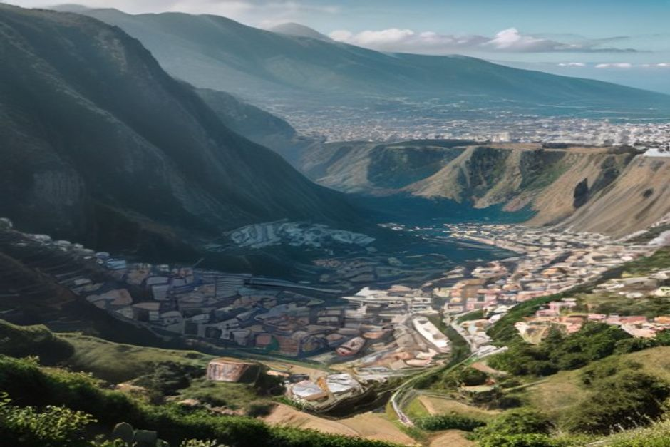
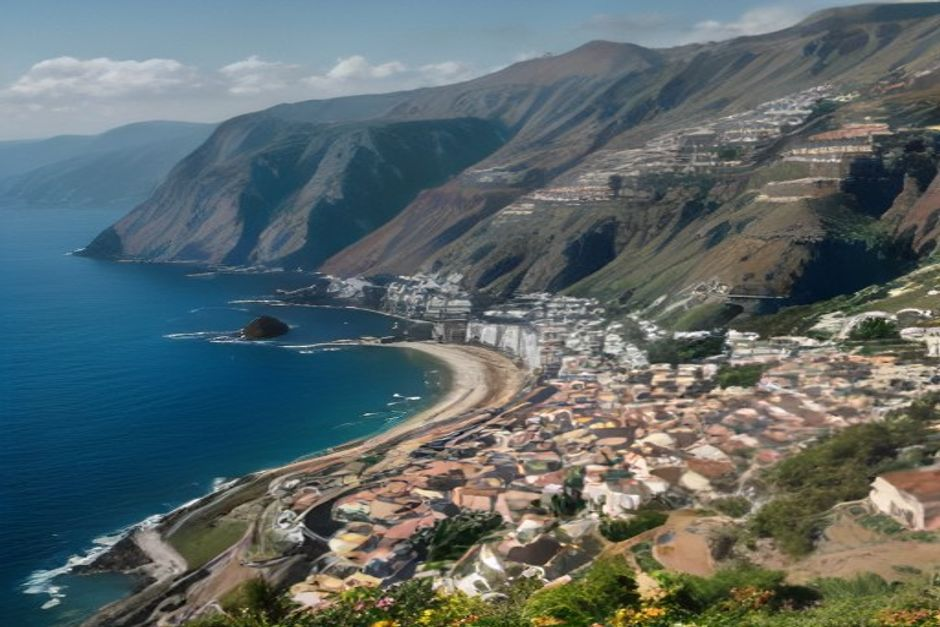

Wer Madeira fotografieren möchte, fragt sich selten nur „Wohin?“, sondern vor allem „Wann?“. Dieselbe Klippe wirkt mittags matt und eine Stunde nach Sonnenaufgang ganz anders. Deshalb haben wir die zehn schönsten Fotospots auf Madeira nicht nach Beliebtheit sortiert, sondern so, wie ein Fototag verläuft: von der Dämmerung auf dem Berg bis zum Abendblick auf Funchal. Zu jedem Ort finden Sie die Tageszeit, die sich lohnt, und das, was Sie vorab wissen sollten.
Der Tag in Kürze: Welcher Spot zu welcher Uhrzeit?
- Vor Sonnenaufgang: Pico do Arieiro
- Sonnenaufgang: Ponta de São Lourenço
- Bedeckter Vormittag: 25 Fontes
- Mittag: Rua de Santa Maria in der Altstadt von Funchal
- Bei hoher Dünung: Naturbecken von Porto Moniz
- Letzte Stunde vor Sonnenuntergang: Câmara de Lobos, Cabo Girão und Fajã dos Padres, am besten vom Wasser aus
- Abend: Miradouro do Pico dos Barcelos
Alle zehn an einem Tag zu schaffen, ist unrealistisch. Wählen Sie lieber zwei oder drei Orte pro Tag und planen Sie den Rest um das Licht herum. Das gilt besonders für die Bergziele, die Sie früh am Morgen und mit etwas Pufferzeit besuchen.
1. Pico do Arieiro: Wolkenmeer vor Sonnenaufgang
Mit 1.818 Metern liegt der Pico do Arieiro, Madeiras dritthöchster Gipfel, oft über der Wolkendecke. Das Foto, wegen dem die meisten kommen, entsteht kurz vor Sonnenaufgang: Wolken füllen die Täler, der Gipfel bleibt frei. Dafür müssen Sie im Dunkeln oben sein.
Rechnen Sie mit Kälte und Wind, auch im Sommer. Eine warme Schicht gehört in den Rucksack, nicht nur die Jacke für später am Tag. Ob die Wolken tatsächlich unter Ihnen liegen, lässt sich nicht vorhersagen. Schauen Sie am Vorabend in die Wetterberichte und bleiben Sie flexibel.
2. Ponta de São Lourenço: Rotes Gestein im Morgenlicht
Die östliche Halbinsel sieht aus wie kein anderer Ort der Insel: kahle, rotocker gefärbte Vulkanrücken, die in ein türkisfarbenes Meer abfallen, ohne den grünen Lorbeerwald, der große Teile des Inneren bedeckt. Weil sie nach Osten zeigt, trifft die Morgensonne das Gestein frontal.
Frühes Kommen hat einen zweiten Vorteil: Der Weg ist am leersten, bevor der Parkplatz sich füllt. So gelingt eine Aufnahme ohne andere Wanderer im Bild.
3. 25 Fontes: Warum bedeckter Himmel hier besser ist
Das ist die Ausnahme von der Regel „Sonne ist gut“. Der Wasserfall mit Becken tief im Lorbeerwald fotografiert sich ohne direkte Sonne am besten. Grelles Mittagslicht brennt die Lichter auf dem Wasser aus und lässt den Waldboden in hartem Schatten versinken. Gleichmäßiges, bedecktes Licht zeigt dagegen die Grüntöne und die Gischt ausgewogen.
Planen Sie für die Wanderung ab dem Parkplatz Rabaçal hin und zurück drei bis vier Stunden ein. Wie bei anderen Levada-Wegen auf Madeira brauchen Sie dafür eine Reservierung über das System SIMplifica. Klären Sie das vor der Anreise, nicht erst am Parkplatz.

4. Rua de Santa Maria in Funchal: Türen bei Mittagslicht
In der Altstadt, der Zona Velha, ist Mittag ausnahmsweise eine gute Zeit. Die bemalten Türen der schmalen Gasse, jede von einem anderen einheimischen oder angereisten Künstler gestaltet, liegen fast den ganzen Tag im Schatten der Häuser. Das Licht bleibt gleichmäßig, es gibt kaum harte Kontraste.
Es sind über 200 Türen. Gehen Sie langsam und schauen Sie auch auf die Details, nicht nur auf die großen Motive. Das passt gut als Programm für die Stunden, in denen draußen an der Küste das Licht flach ist.
5. Natürliche Lavabecken von Porto Moniz: Dramatik bei Dünung
Die Becken aus Lavagestein an der Nordwestspitze wirken am stärksten, wenn Baden gerade nicht ratsam ist. Bei größerer Atlantikdünung schlägt die Gischt über den schwarzen Fels und die Beckenränder. Aus der Entfernung ist das eindrucksvoll, für das Schwimmen aber ein Grund, an diesem Tag draußen zu bleiben.
Schauen Sie vor der Fahrt in den Seegangsbericht. An ruhigen Tagen baden Sie hier angenehmer, das Foto fällt dafür flacher aus. Je nach Ziel müssen Sie sich also entscheiden.
6. Câmara de Lobos: Das Fischerdorf in der letzten Lichtstunde
Das Fischerdorf mit seinen übereinander gestaffelten, bunten Häusern über dem kleinen Hafen soll Winston Churchill gemalt haben. Am besten sieht es von der Wasserseite aus, in der letzten Stunde vor Sonnenuntergang: Dann fangen Boote im Hafen und die Pastellfassaden darüber dasselbe warme Licht ein. Ob der Himmel mitspielt, bleibt Glückssache.
Auf der Tagestour von Chifbay ist Câmara de Lobos einer der ersten Halte nach dem Auslaufen aus Funchal. Die langsame Vorbeifahrt reicht für ein paar gute Bilder.
7. Cabo Girão: Die Steilwand von unten
Das Cabo Girão ist eine der höchsten Steilküsten Europas, rund 580 Meter hoch. Die meisten Besucher kennen es nur vom Skywalk mit Glasboden oben. Das stärkere Foto entsteht aber von unten: Fährt ein Boot am Fuß der Klippe entlang, steht die ganze Basaltwand über Ihnen, an der Terrassenfelder mit Bananen am Fels hängen.
Am späten Nachmittag streift das Licht seitlich über die Wand und färbt das Vulkangestein rostrot, wenn das Wetter es zulässt. Zusagen kann das niemand, aber der Nachmittag ist die Zeit, in der sich der Versuch lohnt.
Chifbay fährt Sie dorthin mit einem privaten Boot: Das ganze Boot gehört nur Ihrer Gruppe, bis zu 5 Gäste, mit zwei lizenzierten Skippern aus Madeira. Der Sunset Trip läuft 1 Stunde 15 Minuten vor Sonnenuntergang aus, das ganze Jahr über, und fährt in 2 Stunden bis zum Cabo Girão (400 EUR für das ganze Boot). Einen Badestopp gibt es dabei nicht.
8. Fajã dos Padres: Die 300 Meter hohe Wand von der Seeseite
Die Fajã mit Bucht und Bio-Farm am Fuß der Klippe erreichen Sie nur mit der Seilbahn oder übers Meer. Das Motiv sieht je nach Anreise völlig anders aus. Aus der Seilbahn blicken Sie hinunter auf Terrassen und die winzige Bucht. Vom Boot aus schauen Sie hinauf zur rund 300 Meter hohen Wand hinter der Farm. Erst dieser Blickwinkel zeigt die wahre Größe.
Auf der Tagestour gehört ein Badestopp mit Paddle Boards bei der Fajã dos Padres dazu. Die Tour startet um 10:00 oder 14:00 Uhr und dauert 2 Stunden 30 Minuten bis Ribeira Brava (500 EUR) oder 3 Stunden bis Ponta do Sol (600 EUR). Die Preise gelten immer für das ganze Boot, nicht pro Person.
9. Miradouro do Pico dos Barcelos: Funchal am Abend
Der Aussichtspunkt über Funchal überblickt die gesamte Bucht: Marina, Altstadt und Kreuzfahrtterminal liegen vor den Bergen im Hintergrund. Wenn die Stadtlichter angehen, bevor es ganz dunkel ist, funktioniert dieser Ort auch nach Sonnenuntergang. Das ist bei den meisten Spots auf dieser Liste nicht der Fall.
Ein Stativ oder ein fester Halt für die Kamera hilft bei der Dämmerung mehr als jedes andere Zubehör.
10. Die ganze Südküste vom Boot: Drei Motive, ein Bild
Cabo Girão, Fajã dos Padres und Câmara de Lobos sind im Grunde ein einziges Bild aus drei Blickwinkeln. Alle drei im selben Licht zu erwischen, gelingt nur auf dem Wasser. Dabei fotografieren Sie nicht allein: Zu jeder Chifbay-Tour gehören ein 360-Grad-Video mit der Insta360, Drohnenaufnahmen (wenn das Wetter es erlaubt) und Fotos, die mit einer richtigen Kamera entstehen. Essen und Getränke an Bord sind ebenfalls inklusive.

Viele der besten Fotos von Madeira entstehen im Blick hinauf zur Insel, nicht im Blick von der Insel hinunter aufs Meer.
Praktische Tipps für Ihre Fototage
- Licht vor Ort: Planen Sie um Sonnenaufgang und Sonnenuntergang herum, nicht um den Ort. Mittags eignen sich Altstadt und Waldwege besser als die Küste.
- Drohne: Madeira unterliegt denselben EU-Regeln wie das portugiesische Festland. In der Nähe des Flughafens und an manchen geschützten Aussichtspunkten sind Drohnenflüge eingeschränkt. Prüfen Sie die aktuellen Regeln, bevor Sie starten. Auf Chifbay-Touren übernimmt das die Besatzung, wenn das Wetter es zulässt.
- Wetter: Berge und Küste können am selben Tag völlig verschieden sein. Bleiben Sie beim Tagesplan flexibel.
- Stornierung: Bei Chifbay ist die Absage bis 24 Stunden vor Abfahrt kostenlos. Das hilft, wenn der Wetterbericht kippt.
Treffpunkt für alle Fahrten ist die Marina do Funchal, Ponton C. Weitere Hinweise finden Sie unter Praktisches, einen Überblick über alle Fahrten unter Erlebnisse und Stimmen anderer Gäste unter Bewertungen.
Wenn Sie die Küste lieber nicht allein auf Land und Straße erkunden möchten, finden Sie auf Bootstouren auf Madeira einen Vergleich der Möglichkeiten.